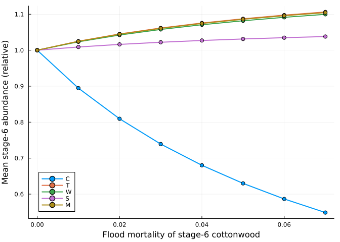
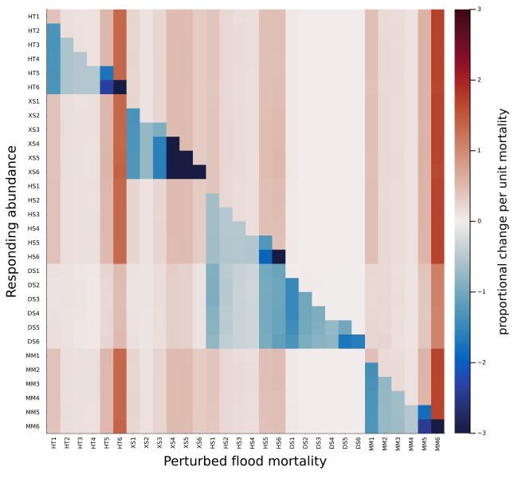
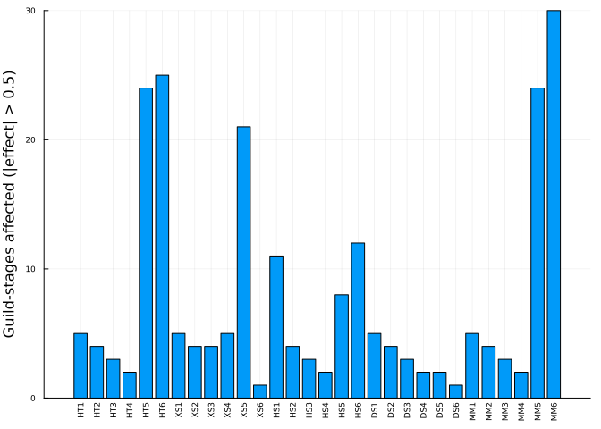
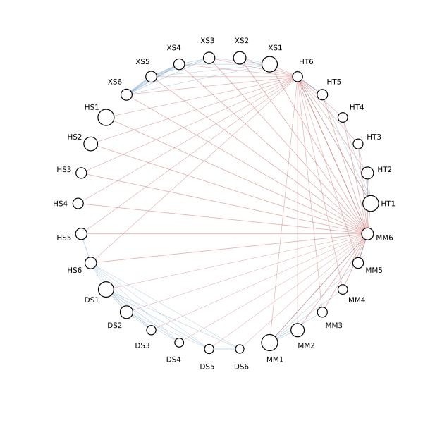

Revealing interactions: cross-species sensitivity analysis
Simon Frost
- Interactions as an output
- One perturbation
- The full matrix
- Which stages matter most
- The network
- A note on R²
- Reference
ENV["GKSwstype"] = "100"
using MatrixCommunityModels
using Plots, Random, StatisticsInteractions as an output
A matrix community model contains no interaction coefficients. Lytle & Tonkin (2023) recover interactions afterwards: change one vital rate of one species and stage a little, project the community, and see how the average abundance of every species and stage responds. Doing this for every vital rate gives a matrix of net effects, which they summarise as a network (their Figs. 2 and 3).
This vignette does that for the riparian guild model of the previous vignette, in its corrected form, perturbing the flood mortality of each of the 30 guild-stages.
One perturbation
abundance_sensitivity takes a function that builds the model with the vital rate set to a given value, the values to try, and the environments. with_rate makes a copy of the guild parameters with one entry changed.
The flow regime is a random draw of years from the record. The same 20 sequences of 300 years are used for every value of the vital rate, so that differences between runs are due to the vital rate and not to the luck of the draw. The first 100 years are discarded.
base = riparian_model(corrected = true)
rng = Xoshiro(1)
sequences = [[rand(rng, base.envs) for _ in 1:300] for _ in 1:20]
function flood_mortality_sensitivity(guild, stage; envs = r -> sequences[r])
v0 = RIPARIAN_GUILDS[guild].S[stage]
values = collect(range(max(0, v0 - 0.05), min(1, v0 + 0.05); step = 0.01))
build(v) = riparian_model(corrected = true, guilds = with_rate(RIPARIAN_GUILDS, guild, :S, stage, v))
return abundance_sensitivity(build, values, envs; burnin = 100, replicates = 20), values
end
s, values = flood_mortality_sensitivity(:C, 6)((slope = [2.8941063716726275e6, 27196.205681559768, 2105.455876929926, 1646.043604229914, 4501.0333011967095, -15915.091859500668, 1.969616545530645e6, 52826.05724552152, 14679.43775403232, 6850.827415677398 … 372.7810906690909, 230.6590467113406, 379.4552298321292, 145.77485342139963, 4.480971214369054e6, 141077.97103077153, 2356.0381137984723, 1518.4201102228083, 6612.51117427275, 25639.221689448957], r2 = [0.9717311055129279, 0.9710200664502038, 0.9709392250167993, 0.97082066655274, 0.9708003164064941, 0.9706925649639362, 0.9716241514835594, 0.9710846942092096, 0.970949281606067, 0.9708609492387071 … 0.9731463538561256, 0.9731971559946676, 0.9728544662141038, 0.9692801046060228, 0.971636988565778, 0.9707272373605086, 0.9705353436822334, 0.9706850578605656, 0.9705445669957481, 0.9696693119531941], means = [2.0510122977463552e6 19190.51110059933 … 4653.482648724525 17561.953159658784; 2.098966811424761e6 19643.412957252818 … 4764.307129655869 17994.475076211842; … ; 2.240470991118772e6 20972.779170096965 … 5087.254061803725 19246.031069491335; 2.2579751849963004e6 21135.958286870202 … 5126.790114443041 19398.086000516945]), [0.0, 0.01, 0.02, 0.03, 0.04, 0.05, 0.06, 0.07])The response of mature (stage 6) individuals of each guild to the flood mortality of mature cottonwood:
guilds = [:C, :T, :W, :S, :M]
mature = 6:6:30
plot(values, s.means[:, mature] ./ s.means[1:1, mature]; label = permutedims(String.(guilds)),
xlabel = "Flood mortality of stage-6 cottonwood", ylabel = "Mean stage-6 abundance (relative)",
marker = :circle, lw = 2)
Killing more mature cottonwood in floods reduces cottonwood and lets every other guild increase: competition, although the model has no competition coefficient.
(slope = round.(s.slope[mature]; digits = 1), r2 = round.(s.r2[mature]; digits = 3))(slope = [-15915.1, 10007.8, 16308.0, 145.8, 25639.2], r2 = [0.971, 0.97, 0.97, 0.969, 0.97])The full matrix
labels = [string(g, i) for g in ("HT", "XS", "HS", "DS", "MM") for i in 1:6]
slope = zeros(30, 30)
r2 = zeros(30, 30)
for (a, g) in enumerate(guilds), i in 1:6
res, _ = flood_mortality_sensitivity(g, i)
slope[:, (a - 1) * 6 + i] = res.slope
r2[:, (a - 1) * 6 + i] = res.r2
endColumn j holds the effect of the flood mortality of guild-stage j on the mean abundance of every guild-stage (rows). To compare stages whose abundances differ by orders of magnitude, each row is divided by that stage’s mean abundance in the unperturbed model, giving the proportional change in abundance per unit of mortality. (Guild labels follow the paper: HT cottonwood, XS tamarisk, HS willow, DS sagebrush, MM meadow.)
baseline = mean(mean_abundance(base.community, base.n0, q; burnin = 100) for q in sequences)
effect = slope ./ baseline
heatmap(labels, labels, clamp.(effect, -3, 3); yflip = true, color = :balance, clims = (-3, 3),
xrotation = 90, xticks = (0.5:1:29.5, labels), yticks = (0.5:1:29.5, labels), tickfontsize = 5,
xlabel = "Perturbed flood mortality", ylabel = "Responding abundance", size = (650, 600),
colorbar_title = "proportional change per unit mortality")
Red cells are positive effects (the responding stage gains when the perturbed stage suffers more in floods) and blue cells negative. The diagonal blocks are within-guild effects. Two features stand out:
(positive = count(effect .> 0), negative = count(effect .< 0),
negative_within_guild = count(effect[i, j] < 0 for i in 1:30, j in 1:30 if (i - 1) ÷ 6 == (j - 1) ÷ 6))(positive = 776, negative = 124, negative_within_guild = 88)Most effects between guilds are positive, that is, competitive. The clearest exception is sagebrush (DS), which declines when willow (HS) suffers more in floods, a net positive effect of willow on sagebrush that no one put into the model. And the effect of a stage’s mortality on its own abundance is not always negative:
[labels[k] => round(effect[k, k]; digits = 2) for k in (1, 6, 13, 18)]4-element Vector{Pair{String, Float64}}:
"HT1" => 0.43
"HT6" => -7.79
"HS1" => 0.4
"HS6" => -3.52More flood mortality of seedlings (stage 1) increases the average number of seedlings of that guild, because the space freed is recolonised by new seedlings and recruitment in this model does not depend on the number of adults.
Which stages matter most
Counting, for each perturbed stage, how many guild-stages change by more than half their abundance per unit of mortality gives a simple measure of influence:
influence = vec(sum(abs.(effect) .> 0.5; dims = 1))
bar(labels, influence; xrotation = 90, legend = false, xticks = (0.5:1:29.5, labels), tickfontsize = 6,
ylabel = "Guild-stages affected (|effect| > 0.5)")
The older stages of cottonwood (HT5, HT6) and meadow (MM5, MM6), and stage-5 tamarisk, affect almost the whole community. Lytle & Tonkin single out mature cottonwood (HT6) as a keystone of this system. Their analysis used the original model, so the two are not directly comparable, but the same stage emerges here.
The network
The matrix can be drawn as a directed network: an arrow from the perturbed stage to each stage it strongly affects.
θ = range(0, 2π; length = 31)[1:30]
x, y = cos.(θ), sin.(θ)
p = plot(; aspect_ratio = 1, axis = false, grid = false, legend = false, size = (600, 600),
xlims = (-1.3, 1.3), ylims = (-1.3, 1.3))
for j in 1:30, i in 1:30
(i != j && abs(effect[i, j]) > 1) || continue
plot!(p, [x[j], x[i]], [y[j], y[i]]; color = effect[i, j] > 0 ? :firebrick : :steelblue,
alpha = 0.35, lw = min(abs(effect[i, j]), 6) / 2)
end
scatter!(p, x, y; ms = 3 .+ 1.5 .* log10.(baseline .+ 1), color = :white, markerstrokecolor = :black)
annotate!(p, [(1.12 * x[k], 1.12 * y[k], text(labels[k], 7)) for k in 1:30])
p
Red links are positive effects, blue negative; node size reflects mean abundance.
InteractionNetwork holds the same network and gives the usual summary measures:
net = InteractionNetwork(effect, labels; threshold = 1)
(links = count(net.adjacency), connectance = round(connectance(net); digits = 3),
link_density = round(link_density(net); digits = 2), reciprocity = round(reciprocity(net); digits = 2))(links = 91, connectance = 0.105, link_density = 3.03, reciprocity = 0.11)first(links(net), 5)5-element Vector{@NamedTuple{from::String, to::String, effect::Float64}}:
(from = "XS5", to = "XS6", effect = -5.4343774594333025)
(from = "XS4", to = "XS5", effect = -3.8721332078786683)
(from = "XS4", to = "XS6", effect = -3.8568866264475323)
(from = "MM5", to = "MM6", effect = -2.446771597754121)
(from = "HT5", to = "HT6", effect = -2.3682103625999105)sort(collect(zip(labels, out_degree(net))); by = last, rev = true)[1:5]5-element Vector{Tuple{String, Int64}}:
("MM6", 29)
("HT6", 23)
("HS6", 6)
("HT1", 5)
("XS1", 5)A note on R²
The paper keeps only relationships with R² above 0.3. Here every relationship has an R² close to one:
quantile(vec(r2), [0.05, 0.5, 0.95])3-element Vector{Float64}:
0.9709487787766036
0.9999048761747208
0.9999949280840726That is a consequence of using the same flow sequences for every value of the vital rate. If each run draws its own sequence, as in the original analysis, sampling noise is added to every point and R² falls, most for the weakest effects:
rng2 = Xoshiro(2)
noisy, _ = flood_mortality_sensitivity(:C, 6; envs = r -> [rand(rng2, base.envs) for _ in 1:300])
(common_sequences = round.(s.r2[mature]; digits = 2), independent_sequences = round.(noisy.r2[mature]; digits = 2),
slope_common = round.(s.slope[mature]; digits = 1), slope_independent = round.(noisy.slope[mature]; digits = 1))(common_sequences = [0.97, 0.97, 0.97, 0.97, 0.97], independent_sequences = [0.96, 0.5, 0.54, 0.01, 0.48], slope_common = [-15915.1, 10007.8, 16308.0, 145.8, 25639.2], slope_independent = [-16458.1, 8335.0, 26528.6, 93.4, 29739.2])With common sequences the R² filter is not needed to separate signal from noise, and far fewer replicates are required; the size of the effect is the more useful criterion.
Reference
Lytle, D. A. & Tonkin, J. D. (2023). Matrix community models for ecology and evolution. npj Biodiversity 2, 26.
Tonkin, J. D., Merritt, D. M., Olden, J. D., Reynolds, L. V. & Lytle, D. A. (2018). Flow regime alteration degrades ecological networks in riparian ecosystems. Nature Ecology & Evolution 2, 86-93.